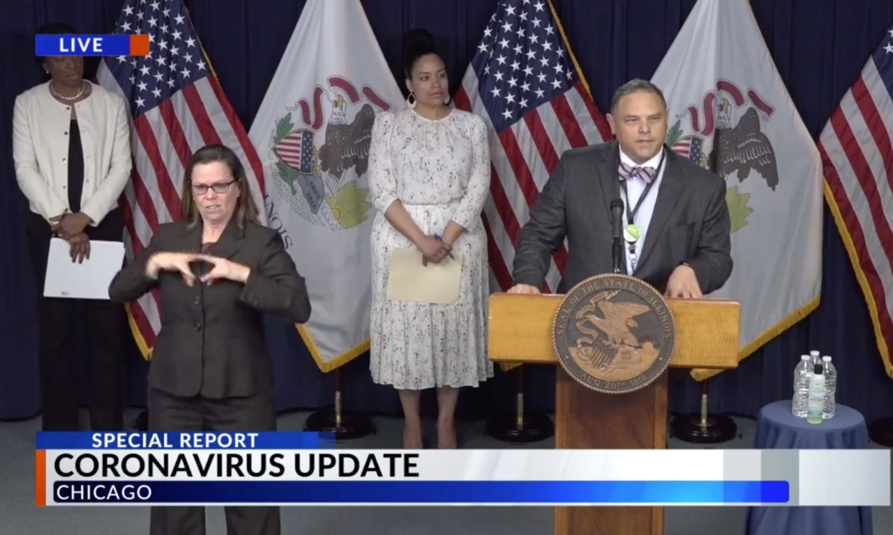

The journey
Bridge-building is a skill. It can be designed, practiced, and taught.
Every offering on this site traces back to one realization in a crowded conference room in 2008, and to the two decades of experience design on either side of it.
How the story is told from the stage
“In 2008 I was in a room full of the smartest people in my field, and I had a job I didn't fully understand. They all had threads: ideas, data, half-finished studies. My job was to find which threads could be woven into something real enough to publish.
By the end we had a journal issue. But what I actually walked away with was a realization: the hardest thing in that room wasn't the science. It was the bridge.”
Why it matters
The conference was federally funded, which gave it credibility and national relevance. Its outputs were peer reviewed and published, which gave it provenance. The November 2008 issue of Academic Emergency Medicine carries seven papers John co-authored, including the conference executive summary, Developing Expert Medical Teams, and Defining Systems Expertise.
The lasting lesson was practical. Getting people who know different things to build something together takes a distinct talent. You have to hold many threads at once, notice which ones are productive, and guide people across the gap between their worlds. That talent can be designed for.
The arc
-
1996
Roots
The emergency department
Residency in emergency medicine at Northwestern University's McGaw Medical Center, then chief resident. Emergency medicine is teams making high-stakes decisions under uncertainty with incomplete information. Every later idea started there.
-
2000
Early technology
Teaching with the tools of the moment
Web-based emergency medicine education, online ECG teaching modules, and leadership in the American College of Emergency Physicians' Section on Informatics. In 2004 he led the “See One, Do One, Teach One” section of a national consensus conference on information technology in emergency medicine.
-
2003
Experience design
Building the first simulation center
Director of the Center for Simulation Technology, Academics and Research at Evanston Northwestern Healthcare, followed by the McGaw Simulation Network and Northwestern's program in Simulation Technology and Immersive Learning. He created the national simulation case library for the Society for Academic Emergency Medicine.
-
2008
Inception
The bridge is the work
Co-chair of the federally funded national consensus conference The Science of Simulation in Healthcare: Defining and Developing Clinical Expertise. Holding the threads of a national research community and carrying the most productive into print showed him that bridge-building is a skill.
-
2009
Standard-setting
Simulation for every medical specialty
Chair of the American Board of Medical Specialties Simulation Planning Group, which planned the use of simulation in maintaining board certification across all specialties. He later chaired the Simulation Academy of the Society for Academic Emergency Medicine.
-
2012
A new territory
Jump, Peoria, and Nice
He joined OSF HealthCare and the University of Illinois College of Medicine at Peoria to lead the Jump Trading Simulation & Education Center. The same year he served as Visiting Professor at the University of Nice's simulation center. In 2013 he was named the Duane and Mary Cullinan Professor in Simulation Outcomes.
-
2014
Proof at scale
Jump ARCHES and the Innovation Academic Incubator
As OSF lead for the Jump ARCHES endowment with the University of Illinois Urbana-Champaign, he designed the workshops, frameworks, and one-to-one sessions that pair clinicians with engineers and scientists. Teams matched skills and data to clinical needs, framed hypotheses, and agreed on KPIs and outcomes.
-
2019
Machine judgment
Chief Medical Officer for Innovation and Digital Health
Seven years leading clinical innovation and digital health at OSF HealthCare, including research on whether a mortality-prediction model performs consistently over time and equitably across populations.
-
2020
Crisis
The pandemic, in public
During COVID-19 he co-authored OSF HealthCare's Pandemic Health Worker plan, served as campus liaison to the University of Illinois Urbana-Champaign, and helped document OSF's end-to-end digital response to COVID-19 care. He also co-authored research on mitigating SARS-CoV-2 transmission at a large public university. In public, he spoke at an Illinois coronavirus press briefing and answered questions in a live coronavirus Q&A hosted by U.S. Representative Rodney Davis.

At the podium during a live Illinois coronavirus press briefing, Chicago. -
2021
Replication
The method travels
The partnership model extended to the University of Illinois Chicago (2021), Bradley University (2023), and Illinois State University (2023). Across the four programs: 69 teams, 308 funded projects, and $24.7M.
-
Today
Passing it on
Teaching the craft, and asking what stays human
Vice President for Philanthropy, Academic Partners & Breakthrough Strategy at OSF HealthCare, and course director for EquIMED and the Physician Innovator Track. The track opens in July 2027 and teaches physicians to innovate with AI as a partner while keeping perception, judgment, and decision their own. The bridge-building now crosses borders too: in 2026 he received a CONFAP–Illinois Collaborative Research Grant to apply healthcare systems engineering to public-health challenges along Brazil's BR-319 Amazonas corridor, in partnership with FIOCRUZ-Amazônia.
What the journey taught
Rehearsal beats instruction
People change how they act by doing and reflecting, not by being told. That is true for a resuscitation team, a new building, and an AI rollout.
The bridge is a design problem
Partnerships across worlds don't happen by goodwill. They need structure, translation, and a guide, and all three can be designed.
Hold many threads, pick the productive ones
Credibility comes from relevance. Provenance comes from finishing: a publication, a KPI, an outcome someone can check.
Go deeper: the patient safety journey traces twenty-five years of this work through three lenses, Ericsson on expertise, Klein on decisions, and Wears on systems.